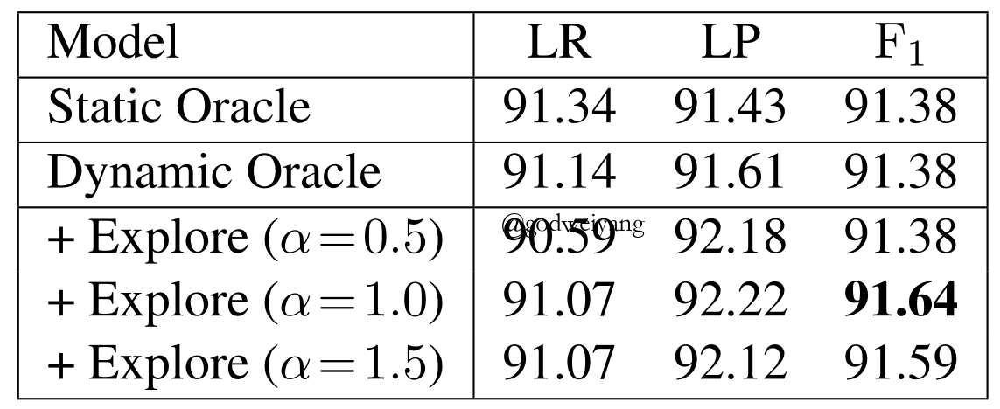

本文将从定义到证明，一步步理清成分句法分析中用到的Dynamic Oracle函数。参考了James Cross在2016年发表在EMNLP上面的论文：论文地址，该论文还是当年的best paper。
成分句法分析系统
首先本文用到的成分句法分析系统是基于span-based的转移系统，在这里只做简略介绍，详见Parsing with Recurrent Neural Networks。
上图展示了该转移系统的转移过程，其中结构化预测只用到了shift(sh)和combine(comb)两种动作，因为stack中存放的是span的左右边界下标，所以comb动作不需要区分左右，这与另一种转移系统的reduce动作不同。而对于label的预测，如果栈首的span不构成短语结点，那么就预测为nolabel，否则就预测为$_i{X_j}$。
每个时刻的状态用三元组$\left\langle {z,\sigma ,t} \right\rangle $表示，分别表示第几个动作、栈（span的split序列）、当前已生成的结点$_i{X_j}$集合。注意到对于长度为$n$的句子，只需要用$4n-2$个动作就可以分析出句法树了，并且第偶数个动作做结构预测（sh和comb），第奇数个动作做label预测。
上图是一个转移的具体例子，下面将全部以这个句子为例进行介绍。注意到多叉树隐式的转化为了二叉树，临时结点预测为nolabel。
Dynamic Oracle
Dynamic Oracle是Goldberg和Nivre在2013年总结出来的，发表在TACL上面：Training Deterministic Parsers with Non-Deterministic Oracles。
提出的动机就是为了解决测试阶段贪心预测错误导致误差越来越大的问题。在训练的时候，原来的静态Oracle方法就是每一步都严格按照标准树的动作来进行预测，最终拟合得和标准树动作序列相同，但是测试的时候没有标准树了，如果某一步预测错误，可能会到达一个训练中没有出现过的状态，那就会导致之后的预测越来越错。所以就提出了Dynamic Oracle的技巧，在训练过程中的每一步预测，不再局限于标准树中的一个动作，而扩展为一个动作集合，只要采取集合中的动作，那么最终得到的动作序列一定也是最优的。
这种方法主要用于贪心的预测方法，例如本文的转移系统就是在每一步贪心的预测当前动作，再如之前介绍过的成分句法分析top-down模型A Minimal Span-Based Neural Constituency Parser中，自顶向下贪心的选择每一个span的最佳split，也要用到Dynamic Oracle来防止错误扩大。之前的博客有过专门介绍，可以去翻看一下：Dynamic Oracle
下面就将从定义、证明等方面来详细阐述Dynamic Oracle。
定义
定义1： 定义$c{ \vdash _\tau }c’$为状态$c$经过动作$\tau $之后转移到状态${c’}$，写成函数的形式就是$c’ = \tau ({c})$。另外定义$ \vdash $为所有动作$\tau $的并集，也就是状态$c$经过任意动作之后转移到状态${c’}$。定义${ \vdash ^*}$为$ \vdash $的自反和传递闭包。
定义2（派生树/可到达树）： 定义$D({c})$为从状态$c$出发，最终可以产生的句法树的集合，即
\[D({c}) = \left\{ {t|c{ \vdash ^*}\left\langle {z,\sigma ,t} \right\rangle } \right\}\]
也可以称作“派生树”或者“可到达树”。
定义3（$F_1$值）： 定义预测树$t$关于标准树$t_G$的$F_1$值为
\[{F_1}(t) = \frac{ {rp}}{ {r + p}}\]
其中$r = \frac{ {\left| {t \cap {t_G}} \right|}}{ {\left| { {t_G}} \right|}},p = \frac{ {\left| {t \cap {t_G}} \right|}}{ {\left| t \right|}}$。
定义4： 将$F_1$扩展为状态$c$的函数，定义${F_1}({c})$为从状态$c$出发可以产生的$F_1$值最高的句法树的$F_1$值，即
\[{F_1}(c) = {\max _{t \in D(c)}}{F_1}(t)\]
定义5（oracle）： 定义状态$c$的oracle为使状态$c$转移过后最优$F_1$值不变的动作集合，即
\[oracle(c) = \left\{ {\tau |{F_1}(\tau (c)) = {F_1}(c)} \right\}\]
至于这个集合该怎么求解，下面将会讲到。
定义6（span包含）： span$(i,j)$被span$(p,q)$包含，当且仅当$p \le i < j \le q$，记为
\[(i,j) \preceq (p,q)\]
定义7（严格包含）： span$(i,j)$被span$(p,q)$严格包含，当且仅当$(i,j) \preceq (p,q)$，并且$(i,j) \ne (p,q)$，记为
\[(i,j) \prec (p,q)\]
同样可以将偏序关系从span扩展到类别，即$_i{X_j}{ \prec _p}{Y_q}$，当且仅当$(i,j) \prec (p,q)$。
定义8（可到达类别）： 对于任意状态$c = \left\langle {z,\sigma |i|j,t} \right\rangle $，定义它的可到达类别集合为
\[reach(c) = left(c) \cup right(c)\]
其中左右可到达类别集合又分别定义为
\[\begin{array}{l}left(c) = \left\{ {_p{X_q} \in {t_G}|(i,j) \prec (p,q),p \in \sigma |i} \right\}\\right(c) = \left\{ {_p{X_q} \in {t_G}|p \ge j} \right\}\end{array}\]
光看定义可能有点生涩，通俗理解就是，$left(c)$为标准树中包含span$(i,j)$的类别集合，并且类别的左端点与栈中的span没有交叉，也就是说类别的左端点就是栈中除了$j$以外的其余split中的某一个。而$right(c)$为标准树中还处于队列中没有进栈的类别集合。
如上图所示，还以之前的句法树为例，现在的状态为$\left\langle {10,[0,1,2,4],\left\{ {_0N{P_1}} \right\}} \right\rangle $，此时的栈顶span$(i,j)=(2,4)$，也就是红色梯形部分，那么$left(c)$就是深蓝色类别，$right(c)$就是天蓝色类别。而灰色类别因为与红色类别交叉了，所以属于不可到达类别，而标准树中还有一个类别$_0N{P_1}$由于已经被识别出来了，所以也属于不可到达类别。
上面定义是基于动作序号为偶数的情况，而对于动作序号为奇数的情况，也就是预测label的动作，只需要将偏序$\prec$修改为$\preceq$即可，因为转移过后span依然是本身，所以不是严格包含关系。
特殊情况（初始值）：
\[reach(\left\langle {0,[0],\emptyset } \right\rangle ) = {t_G}\]
很显然，初始时$t_G$中所有类别都属于$right(c)$。
最后需要注意的一点是，根据以上定义有
\[reach(c) \cap t = \emptyset ,reach(c) \subseteq {t_G} - t\]
这一点也是很显然的，$left(c)$都是严格包含span$(i,j)$的，所以与$t$不存在交集，而$right(c)$在队列里，更不可能存在交集，观察上面的例子会更加好理解。
定义9（next类别）： 对于任意状态$c = \left\langle {z,\sigma |i|j,t} \right\rangle $，上面已经定义了它的可到达类别集合，最后再定义它的下一个可到达类别为严格包含span$(i,j)$的可到达类别集合（即$left(c)$）中偏序关系最小的类别
\[next(c) = {\min _ \prec }left(c)\]
结构化和label Oracles
对于任意动作序号为偶数的状态$c = \left\langle {z,\sigma |i|j,t} \right\rangle $，记$next(c){ = _p}{X_q}$，那么定义它的结构化Dynamic Oracle为
也就是使当前状态向着标准树中最接近它的状态$next(c)$转移，如果$p = i,q > j$，那么应该在移进栈里一些单词；如果$p < i,q = j$，那么不能再移进了，而应该在栈里combine两个span；如果$p < i,q > j$，那么移进或者归约都可以，反正总能达到前两种状态。
特殊情况（初始值）：
\[dyna(\left\langle {0,[0],\emptyset } \right\rangle ) = \{ sh\} \]
即使当前预测的span是错的，也可以经过Dynamic Oracle指导，几步之后预测到正确的$next(c)$。而如果没有Dynamic Oracle，可能就一直错下去了。
上图是几种任意状态的Dynamic Oracle示例，除了第一种之外，其余三个都是预测错误的，如果没有Dynamic Oracle，甚至都不知道下一步转移的动作是什么。
引理1： 对于任意状态$c$，任意动作$\tau \in dyna(c)$，有
\[reach(\tau (c)) = reach(c)\]
而对于任意动作$\tau \notin dyna(c)$，有
\[reach(\tau (c)) \not\subset reach(c)\]
最后是label Dynamic Oracle，这个就很简单了，如果span$(i,j)$出现在了标准树中，那么预测类别就行了，否则的话预测为nolabel：
正确性证明
主要证明两点内容：
- 首先定义一个特殊的树$t^*{(c)}$，下面会证明它是从状态$c$开始可以得到的得分最高的树。
- 然后证明从状态$c$开始按照Dynamic Oracle策略，确实可以得到最优树$t^*{(c)}$。
定义10（$t^*{(c)}$）： 对于任意状态$c = \left\langle {z,\sigma,t} \right\rangle $，定义最优树$t^*{(c)}$为$c$中的子树$t$并上当前状态可到达的类别集合，也就是
\[{t^*}(c) = t \cup reach(c)\]
下面我们会证明，$t^*{(c)}$的确是当前状态可以得到的得分最高的树。
上图形象的说明了几种树之间的关系。当前子树$t$与标准树$t_G$不一定完全重合，可能有预测错误的，所以是交叉的。那么接下来的预测如果全部预测为标准树中的$reach(c)$，那么得分一定是最高的。而剩余的白色部分就是与$t$的span产生交叉的类别，属于不可到达的。
引理2： 对于任意状态$c$，最优树$t^*{(c)}$一定是$c$的派生树，也就是
\[{t^*}(c) \in D(c)\]
定理1： 对于任意状态$c$，有
\[{F_1}({t^*}(c)) = {F_1}(c)\]
也就是说最优树$t^*{(c)}$的得分一定是当前状态可以得到的最高分数。
证明也很简单，根据召回率和准确率公式，最优树$t^*{(c)}$是在$t$的基础上加入了所有的标准树中的可到达类别$reach(c)$，所以召回率分子不会降下来，召回率不可能更高了；同时并没有加入任何不在标准树中的类别，所以准确率的分母也不可能减小，准确率也不会更高了。因此$t^*{(c)}$就是当前状态可以得到的最优树。
推论1： 对于任意状态$c = \left\langle {z,\sigma,t} \right\rangle $，对任意$t’ \in D(c),t’ \ne {t^*}(c)$，都有
\[{F_1}(t’) < {F_1}(c)\]
上面已经证明了$t^*{(c)}$是最优树，所以自然其余的树得分都比它低了。
最后需要证明的一点就是，按照Dynamic Oracle策略进行转移，一定能到达这个最优树吗？
引理3： 对于任意状态$c = \left\langle {z,\sigma,t} \right\rangle $，对任意动作$\tau \in dyna(c)$，都有
\[{t^*}(\tau (c)) = {t^*}(c)\]
反之如果$\tau \notin dyna(c)$，那么有
\[{t^*}(\tau (c)) \ne {t^*}(c)\]
原文并没有给出证明，粗略理解的话，按照Dynamic Oracle策略，下面应该向着$next(c)$这个类别靠近，而在这个过程中，包含在$next(c)$内的$right(c)$都会被sh动作识别，而其余不在标准树中的类别都会被识别为nolabel，$next(c)$又是第一个$left(c)$，所以所有的$reach(c)$都可以被识别，所以这是符合$t^*{(c)}$定义的。
反之如果不按照Dynamic Oracle策略来转移，下一步产生的span一定会与$next(c)$产生交叉，因此$next(c)$再也无法被包括进最终的句法树中，所以第二点也成立。
最终综合引理3、定理1和推论1，得到了本文中最关键的结论：
定理2： $dyna()$函数符合定义5中的oracle定义，即对于任意状态$c$，有
\[dyna(c) = oracle(c)\]
总结
至此关于Dynamic Oracle已经全部介绍完了，在黄亮老师的个人主页上面，还有这篇论文的会议视频和ppt，还有github源码，大家可以去深入学习：Liang Huang。
当然，在具体实现中，由于在训练集上过早的拟合，单纯使用Dynamic Oracle并没有得到任何效果提升，所以要加入exploration机制，也就是人为的干预动作分类，使模型故意预测错误的动作，这样就能学习到更多的情况了，事实证明这样的确得到了略微提升。PTB上的结果如下：

最后提一个小疑问，关于引理1，原文说之后定理的证明会用到它，但我没看出来哪里用到了。而且我对它的正确性也有所怀疑，按照Dynamic Oracle转移之后，$reach(c)$不可能一直不变啊，按理说会先不变，再变少，交替变化，最后生成句法树后变为空集。并且原文中引理1符号也出现了一个小错误，我在这里修改正确了。
关于这一点疑问，我已经发邮件请教了原作者James Cross，他也已经回复我了，更深入的解答不久应该就会告诉我了，到时候我再更新一下。如果大家有想法的话，也可以提出来。